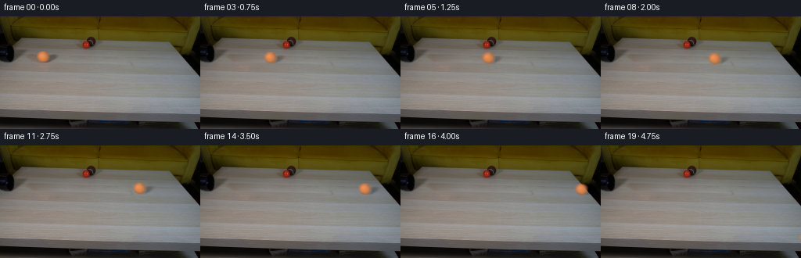
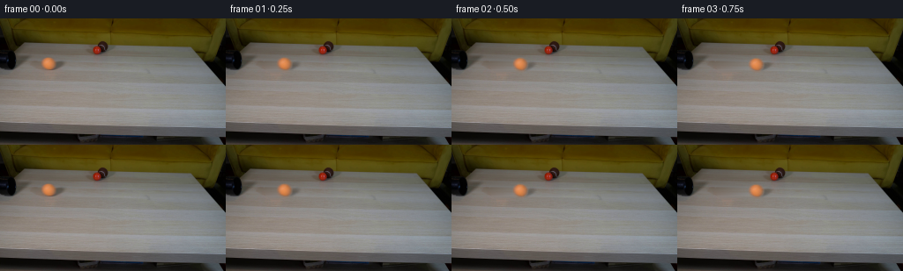

CODING AGENTS AS PIXEL WORLD MODELS
traex/GPT-6.1-Sol · 0011
点击播放 · 原生 RGB 像素
逐轮保存的候选
回放视频、检查图与代码变化。
每份候选均可单独播放。实际图片检查记录在下方工具轨迹中。
候选 01播放与检查图
点击播放 · 原生 RGB 像素


展开代码变化
--- 上一保存版本
+++ 本次保存版本
@@ -0,0 +1,123 @@
+from pathlib import Path
+import numpy as np
+from PIL import Image
+import cv2
+from scipy.ndimage import gaussian_filter, map_coordinates
+import artifact_io
+
+ROOT = Path(__file__).resolve().parent
+
+def make_scene(source):
+ src = source.astype(np.float64)
+ yy, xx = np.mgrid[:144, :256]
+ # Restore the bit of wood hidden by the ball and its cast shadow. The
+ # surface illumination and fine horizontal grain are interpolated locally.
+ mask = ((((xx-54.3)/11.4)**2 + ((yy-51.8)/10.4)**2)<1) | \
+ ((((xx-64.9)/12.4)**2 + ((yy-53.0)/7.8)**2)<1)
+ plate = src.copy()
+ rng = np.random.default_rng(22)
+ for y in range(40,64):
+ row = np.flatnonzero(mask[y])
+ if not len(row): continue
+ left, right = row[0], row[-1]
+ lo = src[y,left-4:left].mean(axis=0)
+ hi = src[y,right+1:right+5].mean(axis=0)
+ s = (row-left+2)/(right-left+4)
+ line = lo[None,:]*(1-s[:,None])+hi[None,:]*s[:,None]
+ # Reuse neighboring wood grain, without repeating any foreground object.
+ tex = src[y,82:82+len(row)].copy()
+ tex -= gaussian_filter(tex,(2.5,0))
+ plate[y,row] = line + tex*.45
+ # Remove the slight reflected warm fringe as well, using the same local
+ # field, with a tapered border to keep the plate unchanged elsewhere.
+ feather = gaussian_filter(mask.astype(float),.65)
+ feather = np.clip(feather*1.8,0,1)
+ plate = plate*feather[...,None]+src*(1-feather[...,None])
+
+ # Photographic matting of the orange sphere. Its chroma isolates it from
+ # the low-saturation wooden tabletop, even at the defocused edge.
+ py, px = np.mgrid[39:64,40:79]
+ base = plate[39:64,40:79]
+ observed = src[39:64,40:79]
+ chroma = (observed[:,:,0]-observed[:,:,1])-(base[:,:,0]-base[:,:,1])
+ norm = 78.0 - .42*(px-54.3) - .7*(py-51.0)
+ alpha = np.clip(chroma/norm,0,1)
+ dist = np.sqrt(((px-54.4)/7.4)**2+((py-51.1)/7.5)**2)
+ alpha *= np.clip((1.40-dist)/.26,0,1)
+ alpha = gaussian_filter(alpha,.2)
+ # A plate including the shadow gives the proper dark rim under the ball.
+ shadow = np.minimum((observed-base).mean(axis=2),0)
+ shadow *= (1-alpha)**2
+ shadow = gaussian_filter(shadow,.6)
+ # Remove isolated grain residuals; keep only the contact/cast shadow.
+ sh_window = np.exp(-.5*((px-64.0)/7.7)**2-.5*((py-53.3)/4.7)**2)
+ shadow *= sh_window
+ shaded_base = base + shadow[...,None]
+ a = np.maximum(alpha,.08)
+ fg = (observed - (1-alpha[...,None])*shaded_base)/a[...,None]
+ fg[:,:,0] = np.clip(fg[:,:,0],155,242)
+ fg[:,:,1] = np.clip(fg[:,:,1],89,159)
+ fg[:,:,2] = np.clip(fg[:,:,2],48,105)
+ fill = np.stack([214-2.2*(py-50)-2.8*np.maximum(px-55,0),
+ 132-1.6*(py-50)-1.5*np.maximum(px-55,0),
+ 78-1.0*(py-50)-.55*np.maximum(px-55,0)],axis=-1)
+ low = np.clip((alpha-.04)/.25,0,1)
+ fg = fg*low[...,None]+fill*(1-low[...,None])
+ return plate, alpha, fg, shadow
+
+
+def generate():
+ first=np.array(Image.open(ROOT/'first_frame.png').convert('RGB'))
+ plate, alpha, color, shadow = make_scene(first)
+ Y,X=np.mgrid[:144,:256].astype(np.float64)
+ frames=[first.copy()]
+ # The line on the tabletop follows the perspective of its long edges.
+ # Gentle rolling resistance, no lateral deflection, and no camera motion.
+ x0,y0=54.4,51.1
+ velocity, deceleration = 46.5, 1.2
+ edge_x=239.5
+ roots=np.roots([-.5*deceleration,velocity,x0-edge_x])
+ edge_t=float(min(r.real for r in roots if r.real>0))
+ for i in range(1,20):
+ t=i/4
+ travel=velocity*t-.5*deceleration*t*t
+ cx=x0+travel
+ cy=y0+.026*travel
+ off=max(t-edge_t,0)
+ # Once the support ends, gravity bends the trajectory downwards.
+ cy += 210*off*off
+ radius_scale=1.0+.015*travel/185
+ sx=(X-cx)/radius_scale+x0-40
+ sy=(Y-cy)/radius_scale+y0-39
+ coords=np.stack([sy,sx])
+ aa=map_coordinates(alpha,coords,order=1,mode='constant',cval=0)
+ rgb=np.stack([map_coordinates(color[:,:,c],coords,order=1,mode='nearest') for c in range(3)],axis=-1)
+ # Small felt fibers rotate with the surface, while illumination stays
+ # fixed in the laboratory coordinate system.
+ nx=(X-cx)/(7.0*radius_scale)
+ ny=(Y-cy)/(7.0*radius_scale)
+ nz=np.sqrt(np.maximum(0,1-nx*nx-ny*ny))
+ ang=travel/7.0
+ u=nx*np.cos(ang)-nz*np.sin(ang)
+ v=nx*np.sin(ang)+nz*np.cos(ang)
+ fiber=(np.sin(26*u+9*ny)*np.sin(31*ny+11*v)+.35*np.sin(49*u+17*v))*.8
+ rgb+=fiber[...,None]*np.array([1,.7,.5])
+ scene=plate.copy()
+ # Shadow stays on the wood and vanishes off the side, rather than
+ # sticking to a ball in free fall.
+ if off==0:
+ sh=map_coordinates(shadow,coords,order=1,mode='constant',cval=0)
+ scene+=sh[...,None]
+ elif off<.15:
+ shcoords=np.stack([(Y-(y0+.026*travel))/radius_scale+y0-39,sx])
+ sh=map_coordinates(shadow,shcoords,order=1,mode='constant',cval=0)
+ scene+=sh[...,None]*max(0,1-off/.15)
+ scene=scene*(1-aa[...,None])+rgb*aa[...,None]
+ frames.append(np.clip(np.rint(scene),0,255).astype(np.uint8))
+ frames=np.stack(frames)
+ artifact_io.save(frames,ROOT)
+ np.save(ROOT/'.tmp'/'candidate.npy',frames)
+ return frames
+
+if __name__=='__main__':
+ generate()
可观测工具轨迹
实际执行的命令与返回图片。
命令 1exit 0
/bin/bash -lc "ls -la && cat prompt.txt && printf '\\n---RULES---\\n' && cat GENERATION_RULES.md"
命令 2exit 0
/bin/bash -lc "cat artifact_io.py && python - <<'PY'
from PIL import Image
import numpy as np
im=np.array(Image.open('first_frame.png'));print(im.shape)
# low res ANSI-free color-letter view median 4px blocks
cols={'K':(15,15,15),'.':(80,80,80),'w':(210,205,195),'T':(190,148,90),'o':(155,77,29),'R':(190,30,24),'g':(125,130,120)}
for y in range(0,144,3):
s=''
for x in range(0,256,3):
v=np.median(im[y:y+3,x:x+3].reshape(-1,3),axis=0)
s+=min(cols,key=lambda k:np.linalg.norm(v-np.array(cols[k])))
print(f'{y:3d} '+s)
print('unique extrema',im.min((0,1)),im.max((0,1)))
PY"命令 3exit 0
/bin/bash -lc "python - <<'PY'
from PIL import Image
import numpy as np
im=np.array(Image.open('first_frame.png')); lum=np.dot(im,[.299,.587,.114]);cs=' .:-=+*#%@'
print('crop 10:100,20:65 brightness:')
for y in range(20,65):
print(f'{y:2} '+''.join(cs[min(9,int(v/18))] for v in lum[y,10:100]))
print('RGB samples:')
for y in [20,25,30,35,40,45,50,55,60,65,80,100,115,120]:
print(y,[(x,tuple(im[y,x])) for x in [10,20,30,40,45,50,55,60,65,70,80,100,120,150,180,220,240]])
PY"命令 4exit 0
/bin/bash -lc "python - <<'PY'
from PIL import Image
import numpy as np
im=np.array(Image.open('first_frame.png')).astype(float)
print('Warm object map x35:81 y39:63; levels of R-G')
for y in range(39,63):
print(f'{y:2} '+''.join(' .,:-+*#%@'[min(9,int(max(0,v)/10))] for v in (im[y,35:81,0]-im[y,35:81,1])))
print('ball RGB:')
for y in range(44,59,2):
print(y,[tuple(v.astype(int)) for v in im[y,47:64]])
print('full low res luminance:')
cs=' .,:;irsXAHM'
for y in range(0,144,2):
print(f'{y:3} '+''.join(cs[min(11,int(v/15))] for v in np.dot(im[y:y+2], [.299,.587,.114]).mean(0)[::2]))
PY"命令 5exit 0
/bin/bash -lc "python - <<'PY'
import importlib.util
for n in ['cv2','scipy','numpy','PIL']:print(n, bool(importlib.util.find_spec(n)))
from PIL import Image
import numpy as np
im=np.array(Image.open('first_frame.png')).astype(int)
print('warm colors full maps')
for y in range(20,65):
print(f'{y:3} '+''.join('R' if (v[0]>120 and v[0]-v[1]>60 and v[1]<80) else 'O' if (v[0]-v[1]>35) else 'o' if (v[0]-v[1]>18) else 'k' if max(v)<30 else '.' if sum(v)<240 else ':' if sum(v)<320 else ' ' for v in im[y,::2]))
PY"命令 6exit 0
/bin/bash -lc "python - <<'PY'
import numpy as np
from PIL import Image
im=np.array(Image.open('first_frame.png')).astype(int)
print('y 40 42 44 46 48 50 52 54 56 58 60 62 64 66 68 70 72 74 76 78 80 82 84 86')
for y in range(40,64):print(y,' '.join('%3d'%v for v in (im[y,40:88:2]@[.299,.587,.114])))
PY"命令 7exit 0
/bin/bash -lc "python - <<'PY'
import numpy as np
from PIL import Image
from scipy.ndimage import gaussian_filter
im=np.array(Image.open('first_frame.png')).astype(float)
print('left pipe region x12:49 y38:60 R,G,B')
for y in range(38,61,2):
print(y, ' '.join(f'{x}:{tuple(im[y,x].astype(int))}' for x in range(18,50,3)))
# centers row at x54 and difference to backgrounds
PY"命令 8exit 0
/bin/bash -lc "cat > .tmp/analyze.py <<'PY'
import numpy as np, cv2
from PIL import Image
from scipy.ndimage import gaussian_filter
from scipy.optimize import least_squares
im=np.array(Image.open('first_frame.png')).astype(float)
y,x=np.mgrid[0:144,0:256]
# clean mask remove ball + shadow. inpainting
mask=(((x-54.2)/10.8)**2+((y-51.1)/9.7)**2<1)|(((x-63.5)/11.5)**2+((y-53.1)/6.5)**2<1)
plate=cv2.inpaint(im.astype('uint8'), mask.astype('uint8')*255,5,cv2.INPAINT_TELEA).astype(float)
# use rowwise background extrapolation to avoid transients
for y0 in range(41,62):
xi=np.flatnonzero(mask[y0]);
if not len(xi):continue
lo,hi=xi[0],xi[-1]
l=im[y0,lo-3:lo].mean(0);r=im[y0,hi+1:hi+4].mean(0)
for xx in xi:
t=(xx-lo+2)/(hi-lo+4);plate[y0,xx]=l*(1-t)+r*t
# chroma fit on large patch
ys,xs=np.mgrid[40:63,41:70];bg=plate[40:63,41:70];data=im[40:63,41:70]; chroma=(data[...,0]-data[...,1])-(bg[...,0]-bg[...,1]);
def pred(p,ret=False):
cx,cy,r,sig,c,a,b=p
d=np.sqrt((xs-cx)**2+(ys-cy)**2)
al=gaussian_filter(np.clip((r-d)*4+.5,0,1),sig)
color=c+a*(xs-cx)+b*(ys-cy)
out=al*color
return (al,out) if ret else out
res=least_squares(lambda p:(pred(p)-chroma).ravel(),[54,51,7,.9,80,-.5,0],bounds=([52,49,5,.3,50,-4,-4],[56,53,9,2,110,4,4]))
print(res.x, 'err',np.sqrt((res.fun**2).mean()))
al,p=pred(res.x,True)
print('rows measured chroma/pred')
for yy in range(3,20,2):print(ys[yy,0], np.round(chroma[yy,4:26]).astype(int),np.round(p[yy,4:26]).astype(int))
print('plate local')
for yy in [44,46,48,50,52,54,56,58,60]:print(yy,[(xx,plate[yy,xx].round(1).tolist()) for xx in [44,48,54,60,66,72]])
np.savez('.tmp/analysis.npz',plate=plate,alpha=al,par=res.x)
PY
python .tmp/analyze.py"命令 9exit 0
/bin/bash -lc "python - <<'PY'
import numpy as np
from PIL import Image
im=np.array(Image.open('first_frame.png'));lum=im@[.299,.587,.114];cs=' .:-=+*#%@'
for y in range(18,45):
print(y,''.join(cs[min(9,int(v/15))] for v in lum[y,95:141]))
print('left x0:30')
for y in range(26,63):
print(y,''.join(cs[min(9,int(v/15))] for v in lum[y,:45]))
PY"命令 10exit 0
/bin/bash -lc "cat > generate.py <<'PY'
from pathlib import Path
import numpy as np
from PIL import Image
import cv2
from scipy.ndimage import gaussian_filter, map_coordinates
import artifact_io
ROOT = Path(__file__).resolve().parent
def make_scene(source):
src = source.astype(np.float64)
yy, xx = np.mgrid[:144, :256]
# Restore the bit of wood hidden by the ball and its cast shadow. The
# surface illumination and fine horizontal grain are interpolated locally.
mask = ((((xx-54.3)/11.4)**2 + ((yy-51.8)/10.4)**2)<1) | \\
((((xx-64.9)/12.4)**2 + ((yy-53.0)/7.8)**2)<1)
plate = src.copy()
rng = np.random.default_rng(22)
for y in range(40,64):
row = np.flatnonzero(mask[y])
if not len(row): continue
left, right = row[0], row[-1]
lo = src[y,left-4:left].mean(axis=0)
hi = src[y,right+1:right+5].mean(axis=0)
s = (row-left+2)/(right-left+4)
line = lo[None,:]*(1-s[:,None])+hi[None,:]*s[:,None]
# Reuse neighboring wood grain, without repeating any foreground object.
tex = src[y,82:82+len(row)].copy()
tex -= gaussian_filter(tex,(2.5,0))
plate[y,row] = line + tex*.45
# Remove the slight reflected warm fringe as well, using the same local
# field, with a tapered border to keep the plate unchanged elsewhere.
feather = gaussian_filter(mask.astype(float),.65)
feather = np.clip(feather*1.8,0,1)
plate = plate*feather[...,None]+src*(1-feather[...,None])
# Photographic matting of the orange sphere. Its chroma isolates it from
# the low-saturation wooden tabletop, even at the defocused edge.
py, px = np.mgrid[39:64,40:79]
base = plate[39:64,40:79]
observed = src[39:64,40:79]
chroma = (observed[:,:,0]-observed[:,:,1])-(base[:,:,0]-base[:,:,1])
norm = 78.0 - .42*(px-54.3) - .7*(py-51.0)
alpha = np.clip(chroma/norm,0,1)
dist = np.sqrt(((px-54.4)/7.4)**2+((py-51.1)/7.5)**2)
alpha *= np.clip((1.40-dist)/.26,0,1)
alpha = gaussian_filter(alpha,.2)
# A plate including the shadow gives the proper dark rim under the ball.
shadow = np.minimum((observed-base).mean(axis=2),0)
shadow *= (1-alpha)**2
shadow = gaussian_filter(shadow,.6)
# Remove isolated grain residuals; keep only the contact/cast shadow.
sh_window = np.exp(-.5*((px-64.0)/7.7)**2-.5*((py-53.3)/4.7)**2)
shadow *= sh_window
shaded_base = base + shadow[...,None]
a = np.maximum(alpha,.08)
fg = (observed - (1-alpha[...,None])*shaded_base)/a[...,None]
fg[:,:,0] = np.clip(fg[:,:,0],155,242)
fg[:,:,1] = np.clip(fg[:,:,1],89,159)
fg[:,:,2] = np.clip(fg[:,:,2],48,105)
fill = np.stack([214-2.2*(py-50)-2.8*np.maximum(px-55,0),
132-1.6*(py-50)-1.5*np.maximum(px-55,0),
78-1.0*(py-50)-.55*np.maximum(px-55,0)],axis=-1)
low = np.clip((alpha-.04)/.25,0,1)
fg = fg*low[...,None]+fill*(1-low[...,None])
return plate, alpha, fg, shadow
def generate():
first=np.array(Image.open(ROOT/'first_frame.png').convert('RGB'))
plate, alpha, color, shadow = make_scene(first)
Y,X=np.mgrid[:144,:256].astype(np.float64)
frames=[first.copy()]
# The line on the tabletop follows the perspective of its long edges.
# Gentle rolling resistance, no lateral deflection, and no camera motion.
x0,y0=54.4,51.1
velocity, deceleration = 46.5, 1.2
edge_x=239.5
roots=np.roots([-.5*deceleration,velocity,x0-edge_x])
edge_t=float(min(r.real for r in roots if r.real>0))
for i in range(1,20):
t=i/4
travel=velocity*t-.5*deceleration*t*t
cx=x0+travel
cy=y0+.026*travel
off=max(t-edge_t,0)
# Once the support ends, gravity bends the trajectory downwards.
cy += 210*off*off
radius_scale=1.0+.015*travel/185
sx=(X-cx)/radius_scale+x0-40
sy=(Y-cy)/radius_scale+y0-39
coords=np.stack([sy,sx])
aa=map_coordinates(alpha,coords,order=1,mode='constant',cval=0)
rgb=np.stack([map_coordinates(color[:,:,c],coords,order=1,mode='nearest') for c in range(3)],axis=-1)
# Small felt fibers rotate with the surface, while illumination stays
# fixed in the laboratory coordinate system.
nx=(X-cx)/(7.0*radius_scale)
ny=(Y-cy)/(7.0*radius_scale)
nz=np.sqrt(np.maximum(0,1-nx*nx-ny*ny))
ang=travel/7.0
u=nx*np.cos(ang)-nz*np.sin(ang)
v=nx*np.sin(ang)+nz*np.cos(ang)
fiber=(np.sin(26*u+9*ny)*np.sin(31*ny+11*v)+.35*np.sin(49*u+17*v))*.8
rgb+=fiber[...,None]*np.array([1,.7,.5])
scene=plate.copy()
# Shadow stays on the wood and vanishes off the side, rather than
# sticking to a ball in free fall.
if off==0:
sh=map_coordinates(shadow,coords,order=1,mode='constant',cval=0)
scene+=sh[...,None]
elif off<.15:
shcoords=np.stack([(Y-(y0+.026*travel))/radius_scale+y0-39,sx])
sh=map_coordinates(shadow,shcoords,order=1,mode='constant',cval=0)
scene+=sh[...,None]*max(0,1-off/.15)
scene=scene*(1-aa[...,None])+rgb*aa[...,None]
frames.append(np.clip(np.rint(scene),0,255).astype(np.uint8))
frames=np.stack(frames)
artifact_io.save(frames,ROOT)
np.save(ROOT/'.tmp'/'candidate.npy',frames)
return frames
if __name__=='__main__':
generate()
PY
python generate.py
python - <<'PY'
from PIL import Image
import numpy as np
f=np.load('.tmp/candidate.npy');s=np.array(Image.open('first_frame.png'))
print('shape/dtype:',f.shape,f.dtype,'frame00 equal:',np.array_equal(f[0],s))
for i in range(1,20):
d=(f[i].astype(float)-f[1].astype(float));warm=f[i,:,:,0].astype(float)-f[i,:,:,1]
mask=(warm>40)&(np.indices(warm.shape)[0]>42)
yy,xx=np.where(mask)
print(i,'ball centroid',round(xx.mean(),2) if len(xx) else None,round(yy.mean(),2) if len(yy) else None,'warm count',len(xx),'delta px',np.any(f[i]"'!=f[0],axis=-1).sum())
PY'命令 11exit 0
/bin/bash -lc "python - <<'PY'
import numpy as np
from PIL import Image
f=np.load('.tmp/candidate.npy')
a=f[8].astype(float)
print('Old ball area R-G, source -> cleaned:')
s=np.array(Image.open('first_frame.png')).astype(float)
for y in range(43,64,2):
print(y,'src',np.round((s[y,44:76:2,0]-s[y,44:76:2,1])).astype(int),'out',np.round((a[y,44:76:2,0]-a[y,44:76:2,1])).astype(int))
print('Ball profile frame 8 brightness/chroma:')
l=a@[.299,.587,.114]
for y in range(43,66):
print(y, ''.join(' .:-=+*#%@'[min(9,int(v/20))] for v in l[y,132:163]))
print('Generated files:')
import os
for p in ['generate.py','pixels.npz','index.html','inspection.png']:
print(p,os.path.getsize(p))
PY"保存候选 1 份；完成命令 11 次；可验证图片返回 0 张。原始 API 响应与完整日志保留在本地。